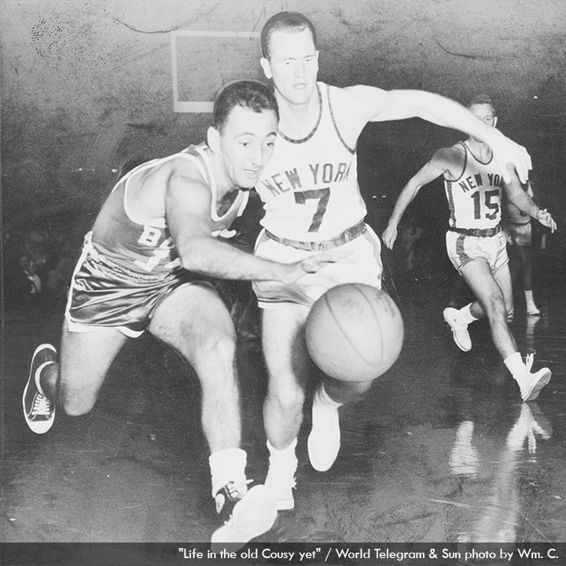
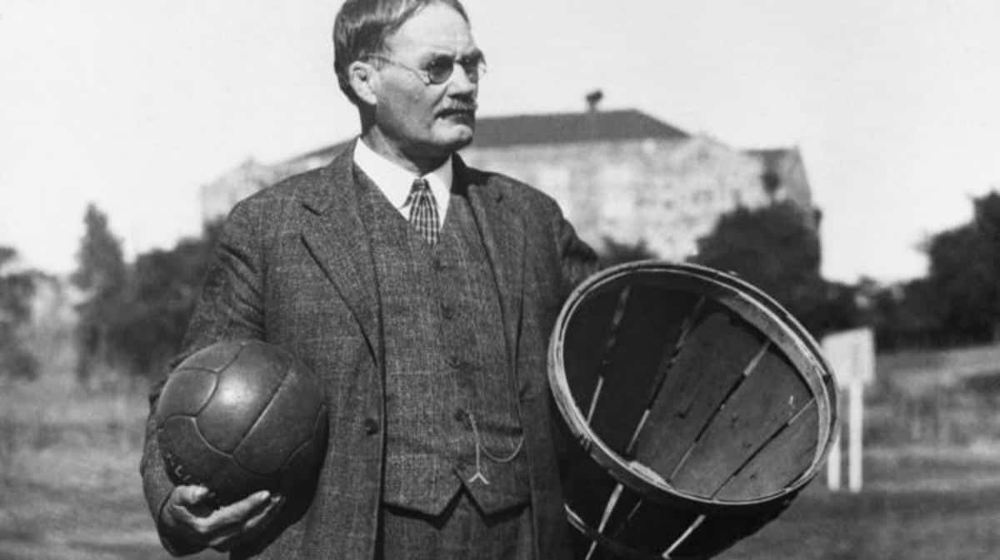

O basquete é um esporte inventado nos Estados Unidos no final do século XIX. Foi criado por James Naismith, um professor de educação física canadense, em dezembro de 1891. Naismith desenvolveu o jogo como uma alternativa para manter seus alunos ativos durante o inverno rigoroso de Massachusetts.A primeira partida de basquete foi jogada com um cesto de pêssegos preso a uma parede elevada, e as regras originais eram bastante diferentes das que temos hoje. O objetivo era acertar a bola no cesto do time adversário, sem driblar. No entanto, logo foram adicionadas melhorias e modificações às regras.O esporte cresceu rapidamente em popularidade nos Estados Unidos e logo se espalhou por todo o mundo. A primeira liga profissional de basquete, a National Basketball League (NBL), foi fundada em 1898, mas durou apenas seis anos. Em 1946, a Basketball Association of America (BAA) foi fundada, e em 1949, ela se fundiu com a NBL para formar a National Basketball Association (NBA), a principal liga profissional de basquete até hoje.Durante o século XX, o basquete se tornou um dos esportes mais populares do mundo. O jogo evoluiu e se desenvolveu, com a introdução de regras como o arremesso de três pontos, o cronômetro de 24 segundos e a linha de lance livre.Os jogadores de basquete também se tornaram figuras icônicas e lendárias. Desde os primeiros dias com jogadores como George Mikan, Bob Cousy e Bill Russell, até as estrelas mais modernas como Michael Jordan, Magic Johnson, Larry Bird, Kobe Bryant, LeBron James e muitos outros, o basquete tem produzido uma longa lista de grandes talentos.Além da NBA, o basquete também é jogado em níveis colegiados, tanto nos Estados Unidos (com a NCAA) quanto em outros países, e é um esporte olímpico desde 1936. O basquete feminino também cresceu em popularidade ao longo do tempo, com a WNBA (Women's National Basketball Association) sendo estabelecida em 1996 como a principal liga profissional de basquete feminino.Hoje, o basquete continua sendo um esporte globalmente amado e apreciado por milhões de pessoas em todo o mundo, tanto em nível profissional quanto amador. Sua dinâmica rápida, habilidades atléticas impressionantes e a emoção dos jogos fazem do basquete um esporte emocionante e cativante.
 